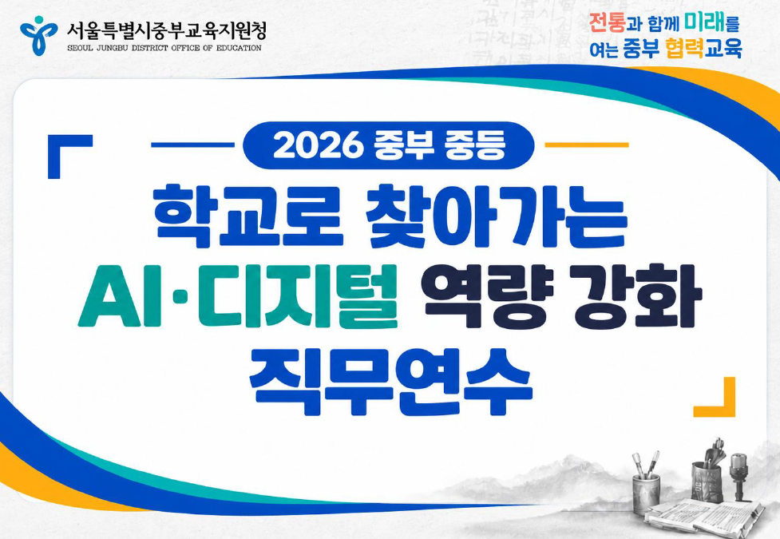

핵심 설명, 단축키와 서비스 접속 링크

학교로 찾아가는
AI·디지털 역량 강화 직무연수
수업도구와 학교 계정으로 자료를 보관하고 공유합니다.
이진선 · 종로산업정보학교 ／ 박현홍 · 용산고
발표 열기
상세 교안 열기
도구별 사용 순서, 관련 화면과 오류 해결 방법
공식 링크·자료
설치·접속·도움말과 개인정보 없는 공유 연습 자료
압축을 모두 푼 뒤 이 화면에서 자료를 엽니다. 본문과 포함된 이미지는 인터넷 없이 볼 수 있으며, 서비스 접속과 공식 링크에는 인터넷이 필요합니다.